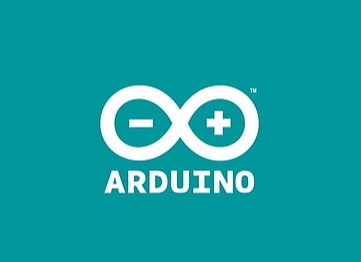

Koding av nettsiden er gjort i HTML og stylet med CSS og javascript.
Oppsettet av nettsiden begynte med å dele de forskjellige delene hvor skrift og bilder skulle inn. Her valgtes det å endre bakgrunnsfarge mens oppsettet av de forskjellige områdene ble opprettet for å ha kontroll på hvordan koden påvirket områdene
Det ble så satt på styling for hovedinnholdet
Etterfulgt av styling av bildeplasseringen, bildestørrelse og overskrift over bilder
Satte opp tekst plassering og kopierte over koden for plassering og størrelse for bilder til andre siden
Formaterte hovedinnhold boksen til å dekke innhold, satte på formatering på tekst og skyggelegging på hoveinnholdsområdet.
Satte på en passende bakgrunn i stil med resten av nettsiden, endret bildene og teksten til relevant informasjon. Og endte til slutt med å sette på en hover effekt på bildene slik at de kunne forstørres
Til programmeringen av ESP-32 mikrokontrolleren som styrer måleinstrumentet er det brukt arduino-IDE.
Begynte med å sette opp en innholdsfortegnelse som skulle bli brukt til å fastsette punkter for hvor vi arbeidet slik at vi som en gruppe kunne arbeide med koden
Satte på defineringer og navngav dem etter hvilken krets defineringene hørte til
Satte opp en void setup som blant annet starter opp serial monitoren og oled skjermen
Lagde void loopen så liten som mulig slik at vi kun arbeidet i funksjoner for hver enkelt måling
Satte opp en funksjon som valgte hva oled skjermen skulle sende ut
Demonstrasjon av hvordan en av måling funksjonene ser ut. Her måles temperaturen på insiden av måleapperatet ved bruk av steinhart equation over en termistor